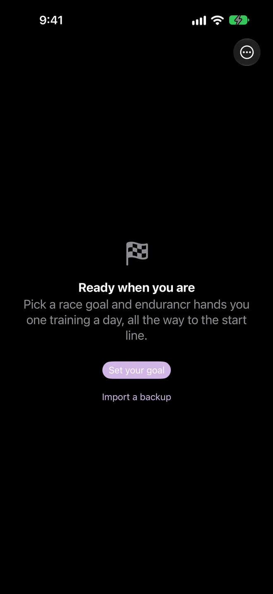
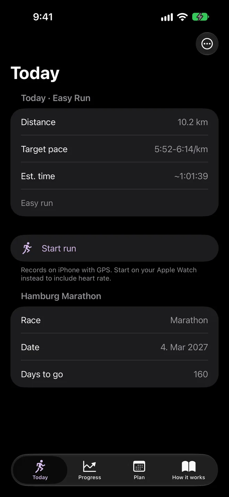
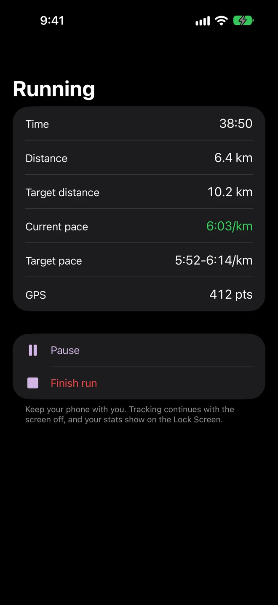
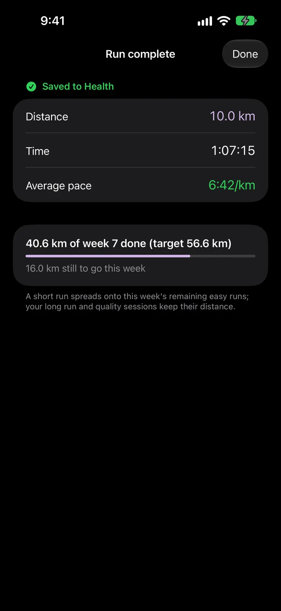
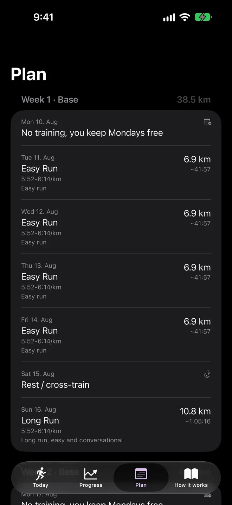

iPhone and Apple Watch
Run for you.
Not for the feed.
Endurance became a scoreboard. endurancr turns it back into a run. One training plan, built around your goal and the pace you actually like, with nobody else's numbers on the screen.
- Free
- Open source
- No account
- No cloud
- No ads
01 Why
Somewhere between the ultra records, the finish-line videos, and the weekly leaderboard, running got loud.
It turned into something to broadcast, rank, and optimize for other people. A private record became a public one. A slow, honest run started to feel like something you had to explain. The endurance world exploded, and in all the noise it quietly forgot the one person it was ever about: you.
Running was never meant to be a scoreboard. It is you, moving at a pace you like, toward something that matters to you. That is the whole point, and it is the only thing endurancr is built for.
No feed. No followers. No comparison. Just you and the next run.
02 What it does
A real plan, that follows your real weeks.
-
Step 1
Set one goal
Pick your race and its date. endurancr builds a full plan using the VDOT method from Jack Tupper Daniels, paced to the fitness you have now, not the fitness you wish you had.
-
Step 2
Run how you like
Record on your iPhone with GPS, or on your Apple Watch to add heart rate. Every run is saved straight to Apple Health. No badge to earn, no streak to protect, no one watching.
-
Step 3
The plan adapts to you
It reads your runs back, re-paces what comes next, reschedules a long run you missed, and eases off when you are tired. The week bends to your life, not the other way around.
03 Screens
From your goal to race day.





And on Apple Watch.
04 What it isn't
The things you will not find in here.
No account, no login.
Nothing to sign up for. You open the app and you run.
No cloud.
Nothing is uploaded, because there is no server to upload it to.
No feed, no followers, no leaderboards.
Your runs are yours to look at, and no one else's to judge.
No ads, no tracking, no analytics.
You are not the product here.
No subscription, no in-app purchases, no "pro".
It is free, and it stays free.
No secrets.
endurancr is open source, built with Apple frameworks only.
05 Your data
Your data goes exactly one place, and you already own it.
endurancr has no backend, so there is nothing to breach and nothing to sell. Your plan lives on your device. Your runs live in Apple Health, saved as standard workouts, read back from the same place. That is the entire map. When you delete the app, the story ends with you.
Read the privacy policy06 Get it
Just you, and your next goal.
endurancr is on Apple TestFlight. You need an iPhone on iOS 26 or later and the free TestFlight app. An Apple Watch on watchOS 26 is optional.